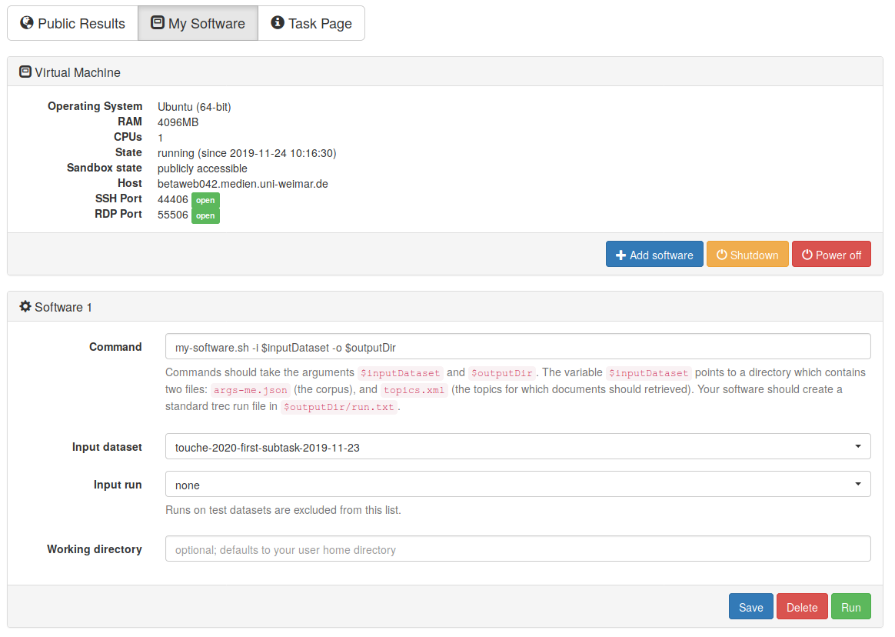
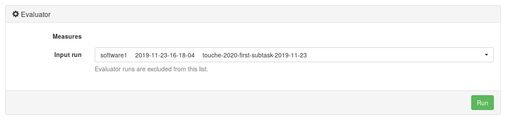

<div class="uk-section">
    <div class="uk-container">
        <h2 class="uk-lead">Submission to TIRA</h2>
        <p class="uk-uk-text-left">
            <h4 class="uk-text-left">Introduction</h4>
            <p class=" uk-text-left">
                Participants will install/deploy their retrieval models in dedicated TIRA virtual machines, so that their runs
                can be reproduced and so that they can be easily applied to different data (of same format) in the
                future.
            </p>
            <h4 class="uk-text-left">Quickstart</h4>
            <p class=" uk-text-left">
                Once retrieval models are ready, participants will upload them to the VM along with any other code
                necessary. Please install your software to your TIRA virtual machine by connecting through SSH or RDP to your VM
                (you can find host ports in the web interface, same login as to your VM).
                If you cannot connect to your VM, please make sure it is powered on: you can check and
                power on your machine in the web interface.
                <br><br>
            </p>
            <h4 class="uk-text-left">Quickstart Task 1</h4>
            <p class=" uk-text-left">
                Your software is expected to accept two arguments:
                <ul>
                    <li>An input directory (named <code>$inputDataset</code> in TIRA). This input directory contains two files: <code>args-me.json</code> (the corpus), and <code>topics.xml</code> (the topics for which documents should be retrieved).</li>
                    <li>An output directory (named <code>$outputDir</code> in TIRA). Your software should create a standard trec run file in <code>$outputDir/run.txt</code>.</li>
                </ul>
                Your Software can use the <code>args-me.json</code> file or the API of the search engine <a href="https://www.args.me/api-en.html">args.me</a> to produce the run file.<br>
                As soon as your Software is installed in your VM, you can register it in TIRA.

                Assume that your software is started with a bash script in your home directory called <code>my-software.sh</code> which expects an argument <code>-i</code> specifying the input directory, and an argument <code>-o</code> specifying the output directory. Click on "Add software" and specify the command <code>my-software.sh -i $inputDataset -o $outputDir</code>. The other fields can stay with default settings.
            </p>
            


            <p class=" uk-text-left">
                Click on "Run" to execute your software in TIRA. Note that your VM
                will not be accessible while your system is running – it will be “sandboxed”, detached from the
                internet, and after the run the state of the VM before the run will be restored. Your run will be
                reviewed and evaluated by the organizers.<br><br>
            </p>

            <h4 class="uk-text-left">Scoring</h4>
            <p class=" uk-text-left">
                Once the run of your system completes, please also run
                the evaluator on the output of your system. These are two separate actions and both should be invoked
                through the web interface of TIRA. You don’t have to install the evaluator in your VM. It is already
                prepared in TIRA. You should see it in the web interface, under your software, labeled “Evaluator”.
                Before clicking the “Run” button, you will use a drop-down menu to select the “Input run”, i.e. one of
                the completed runs of your system. The output files from the selected run will be evaluated.
            </p>
            
            <p class=" uk-text-left">
                You will see neither the files your system outputs, nor your STDOUT or STDERR. In the evaluator run you
                will see STDERR, which will tell you if one or more of your output files is not valid. If you think
                something went wrong with your run, send us an e-mail. We can unblind your STDOUT and STDERR on demand.
                <br><br>
                You can register more than one system (“software/ model”) per virtual machine using the web interface.
                TIRA gives systems automatic names “Software 1”, “Software 2” etc. You can perform several runs per
                system.
            </p>
            <p class=" uk-text-left font-italic">
                NOTE: By submitting your software you retain full copyrights. You agree to grant us usage rights for
                evaluation of the corresponding data generated by your software. We agree not to share your software with a
                third party or use it for any purpose other than research. The generated summaries will however be
                shared with a crowdsourcing platform for evaluation.
            </p>
            <h4 class="uk-text-left">Quickstart Task 2</h4>
            <p class=" uk-text-left">
                Your software is expected to accept two arguments:
                <ul>
                    <li>An input directory (named <code>$inputDataset</code> in TIRA). This input directory contains a <code>topics.xml</code> file hat contains the topics for which documents should be retrieved.</li>
                    <li>An output directory (named <code>$outputDir</code> in TIRA). Your software should create a standard trec run file in <code>$outputDir/run.txt</code>.</li>
                </ul>
            </p>
            <p class=" uk-text-left font-italic">
                NOTE: By submitting your software you retain full copyrights. You agree to grant us usage rights for
                evaluation of the corresponding data generated by your software. We agree not to share your model with a
                third party or use it for any purpose other than research. The generated summaries will however be
                shared with a crowdsourcing platform for evaluation.
            </p>
        </p>
    </div>
</div>
